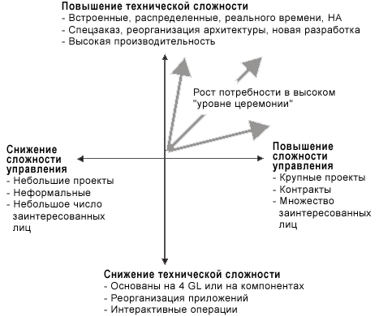

| Рекомендация: Особенности внедрения процесса |
 |
|
| Связанные элементы |
|---|
ОбзорНа процесс разработки программного обеспечения оказывают влияние следующие факторы:
Важность этих факторов различна. В следующих разделах приводится описание основных из них, т.е. наиболее влияющих на форму и способ реализации процесса разработки. Бизнес-контекстБизнес-контекст - контекст, в котором разрабатывается ПО. Существуют различные типы бизнес-контекстов, определяющих содержание адаптации процесса. Примеры:
Есть также множество промежуточных ситуаций, например, когда только часть разработки ведется субподрядчиками, или когда разработка рассредоточена географически. Хорошим индикатором бизнес-контекста является число различных заинтересованных сторон. Бизнес-контекст определяет уровень формальности, оформления и строгости процесса. Чем больше заинтересованных сторон - покупателей, заказчиков, субподрядчиков, органов управления, и т.д. - тем больше потребность в создании формальных данных, таких как документации, отчетов, прототипов и больших вех. Трудозатраты на разработку программного обеспеченияТрудозатраты на разработку программного обеспечения описывается определенными показателями, такими как объем кода (число строк), поставляемый объем инструкций (Delivered Source Instructions), баллами функциональной оценки, числом человеко-дней или просто стоимостью. Трудозатраты на разработку также влияют на уровень формальности, оформления и строгости процесса. Чем больше размер проекта, тем больше команда разработчиков и, независимо от бизнес-контекста, тем более формальными и явными должны быть требования, интерфейсы и индикаторы хода работ. В случае больших проектов коммуникативные проблемы могут усиливаться еще и географическим рассредоточением команды. Элемент новизны для организации, занимающейся разработкойЭлемент новизны определяется предыдущими работами данной занимающейся разработкой организации и, в частности, является ли данный цикл разработки первым. Прежде всего - это зрелость организации и процесса разработки, ресурсы, которыми она располагает, навыки ее работников, собрание и подготовка команды, приобретение инструментов и других ресурсов. Степень новизны проекта оказывает влияние на процесс совершенно другим образом. Новый проект - первый в своем роде - оказывает существенное влияние на динамическую конфигурацию: начальный этап и уточнение занимают больше времени, и могут растянуться на несколько итераций. Также, особое значение будет придаваться, выявлению и сбору требований, моделированию вариантов использования, архитектуре и мерам по снижению риска. Для проекта, находящегося в эволюционном цикле и основывающемся на предыдущей системе, управление изменениями является более критичным и повторное использование кода создает дополнительные трудности. Элемент новизны относится не только к разрабатываемой системе, но и к зрелости организации, выполняющей заказ, т.к. внедрение новых для нее инструментов и методики также влияет на процесс. В частности, внедрение собственно Rational Unified Process (RUP) должно быть тщательно продуманным и поэтапным. Очевидно, что организация проявит некоторую инертность при внедрении нового процесса и при составлении плана внедрения необходимо стремиться сделать переход от прежних методик как можно более плавным. Тип приложенияСуществует множество типов приложений, например: встроенные системы реального времени, распределенные информационные системы, телекоммуникационные системы, системы автоматизированной разработки программ (CASE) и т.д. Процесс разработки зависит от типа приложения, особенно в части требований к защите, производительности интернационализации, использованию памяти и т.д. Тип приложения оказывает влияние на процесс если приложение будет применяться для решения ответственных задач, например, управления полетом самолета. Такие системы требуют особого уровня формальности, как для отслеживания требований, так и для гарантии качества продукта. Также требуется выделение больших ресурсов для тестирования. Предметная область привносит в процесс такие нюансы:
Тип разработкиЕсть несколько типов разработки:
Текущий процесс разработкиВ большинстве случаев прежний процесс разработки не заменяется новым полностью, по крайней мере сразу. Вместо этого внедрение нового процесса выполняется поэтапно, сначала концентрируясь на наиболее критических и важных областях. Элементы прежнего процесса остаются в использовании некоторое время, а иногда даже навсегда. Проблемы и их первопричиныЧасти процесса, на которых будет акцентироваться внимание вначале его реализации, зависят от того, как проблемы будут идентифицированы и как они будут распределены по важности. Обратите внимание, что если в организации нет устоявшихся правил работы, то идентификация проблем скорей всего не будет иметь смысла. См. Концепции: Реализация процесса в проекте. Вместо этого может потребоваться определить первопричины проблем. Тогда, для решения проблем нужно будет устранить первопричины путем усовершенствования процесса, связанного с ними, а именно внедрением инструментов для автоматизации процесса и ознакомления с ними штата. Примеры проблемНаиболее частые проблемы:
Примеры первопричинПроблема часто является результатом нарушения чего-то другого. Необходимо определить первопричины проблем. Наиболее частые первопричины проблем:
Организационные факторыРеализация процесса в организации зависит от от таких факторов, как гибкость организации, ее структура, культура организации и управления, компетентность и навыки команды, опыт предыдущих разработок, отношение к нововведениям. Организационные факторы также влияют на конфигурацию процесса. Например, если ранее в организации использовалось описание процесса разработки ПО, то перейти на RUP будет легче. В противном случае может быть принято решение ограничить область описания процесса. Также можно уделить особое внимание легкости понимания и использования описания процесса, включая в него наиболее ценную информацию. Если большинство коллектива не знакомо с некоторыми концепциями, облегчить переход помогут хорошо составленные руководства. Например, если меняется язык программирования, то для содействования его изучению составьте качественные руководящие указания по программированию и проектированию. Отношение к нововведениямНепринятие работниками организации инициатив, касающихся внедрения новых технологий, процесса или инструментов разработки - главная угроза успешному внедрению RUP. Слишком большой энтузиазм также может быть вредным, т.к. вместо концентрации на работе люди будут концентрироваться на процессе. Для оценки настроений персонала предложите ответить на следующие вопросы:
Для оценки мотивации персонала ответьте на следующие вопросы:
Знаками негативного отношения будут ответы подобные следующим:
Вот некоторые советы по изменению отношения:
Знаки чрезмерного энтузиазма:
Вот некоторые советы на этот случай:
Техническая и управленческая сложностьВсе типы систем и их проекты можно классифицировать по технической и и управленческой сложности. На следующем рисунке иллюстрируется такая классификация. Например, небольшая программа табличных расчетов имеет низкую как техническую, так и управленческую сложность, тогда как программное обеспечение для оружейных систем обычно сложно как с технической, так и с управленческой точки зрения. Увеличение размеры системы, периода эксплуатации усложняет управление проектом. Увеличение степени новизны в предметной области, оригинальности решения увеличивает техническую сложность. Оба вида сложности взаимосвязаны - многие большие проекта также технически сложны. Таким образом:

Системы классифицируются по технической и управленческой сложности |
© Copyright IBM Corp. 1987, 2006. Все права защищены.. |